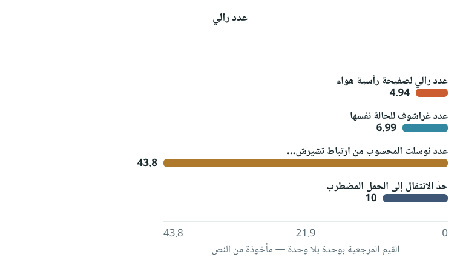

عدد رالي
Rayleigh Number
حاصل ضرب عدد غراشوف في عدد برانتل؛ عدد لا بُعدي يقيس الطفو مقابل اللزوجة والانتشار الحراري، ويختار ارتباط الحمل الطبيعي.
عدد رالي هو حاصل ضرب عدد غراشوف في عدد برانتل: Ra = Gr·Pr = g·β·ΔT·L³/(ν·α). وهو يقيس نسبة قوى الطفو الناتجة عن فرق الحرارة إلى مجموع مقاومتي اللزوجة والانتشار الحراري، ومن ثمّ يحدد نظام الحمل الطبيعي: صفحيًا كان أو مضطربًا. تُكتب به ارتباطات الحمل الطبيعي القياسية، ومنها ارتباط تشيرشل–تشو للصفيحة الرأسية، ويقع حدّ الانتقال إلى الاضطراب عنده حول Ra = 10⁹. ولهذا يُختار الارتباط بعدد رالي لا بفرق الحرارة وحده، لأن العدد يحمل أثر فرق الحرارة والهندسة وخصائص المائع في رقم واحد. وخصائص المائع تُقيَّم عند حرارة الغشاء T_f = (T_w + T_∞)/2 لأن الطبقة الحدّية تمتد بين الحرارتين.
كيف تعمل الظاهرة؟
تسخين المائع قرب السطح يخفض كثافته فيصعد، ويحل محله مائع بارد فيهبط، فتتكوّن حركة لا تحتاج مضخة. وهذه الحركة تصطدم بمقاومتين: اللزوجة التي تعوق الجريان، والانتشار الحراري الذي يبدد فرق الحرارة قبل أن يتحول إلى طفو. وعدد رالي هو نسبة الطفو إلى حاصل ضرب المقاومتين، فإذا كبر غلب الطفو وصار الجريان مضطربًا، وإذا صغر بقي الحمل صفحيًّا أو انعدم فبقي النقل بالتوصيل. ولهذا يظهر Ra في كل ارتباطات الحمل الطبيعي كمتغيّر مستقل.
العلاقة بالأرقام
الحساب على صفيحة رأسية L = 0.3 متر في هواء عند 300 كلفن، ΔT = 20 كلفن، وخصائص الهواء عند حرارة الغشاء: β = 1/300 = 3.333×10⁻³ كلفن⁻¹، ν = 1.589×10⁻⁵ م²/س، α = 2.25×10⁻⁵ م²/س، Pr = 0.707، k = 0.0263 واط/(م·كلفن). أولا Gr = 9.81×3.333×10⁻³×20×0.027/(1.589×10⁻⁵)² = 0.01766/2.525×10⁻¹⁰ = 6.99×10⁷. ثم Ra = 6.99×10⁷ × 0.707 = 4.94×10⁷. وجذرها الرابع 83.9، ومنها Nu = 0.68 + 0.67×83.9/[1+(0.492/0.707)^(9/16)]^(4/9) = 43.8، فيكون h = 43.8×0.0263/0.3 = 3.84 واط/(م²·كلفن).
مفاهيم متقاربة
الخلط الشائع أن رالي «عدد الحرارة» وأن غراشوف يكفي؛ والفرق أن غراشوف يحمل اللزوجة وحدها، ورالي يضيف الانتشار الحراري فيصير صالحًا للموائع المختلفة عند الحالة نفسها. والخلط الثاني أن رالي تُحسب بالفرق الحراري مباشرة: التكعيب في L³ يجعل الطول المميّز يؤثر بثلاثة أسّات، فصفيحة بطول 0.6 متر تعطي Ra أكبر ثماني مرات من صفيحة 0.3 متر بالفرق الحراري نفسه، ولهذا لا تُقارن أرقام رالي بلا ذكر الطول المميّز.
حدود التطبيق
التعريف يفقد صلاحيته حين لا تكون الخصائص ثابتة: في الزيوت والغازات القريبة من النقطة الحرجة تتغير اللزوجة والحرارة النوعية بفرق الحرارة نفسه، فتصبح Ra رقمًا وسطًا لا يوصف الحالة. ويتوقف معنى الطول المميّز على الهندسة (ارتفاع الصفيحة، قطر الأسطوانة، الفجوة) فلا يُقارن رقم محسوب بطول بآخر محسوب بغيره. وارتباطات رالي مشروطة بمداها، ولا تصح في الفراغات المغلقة الصغيرة ولا في الحمل المختلط حيث تغلب سرعة الجريان القسرية.

| الكمية | القيمة | المصدر |
|---|---|---|
| عدد رالي لصفيحة رأسية هواء | 4.94×10⁷ بلا وحدة | [1] |
| عدد غراشوف للحالة نفسها | 6.99×10⁷ بلا وحدة | [1] |
| عدد نوسلت المحسوب من ارتباط تشيرشل–تشو | 43.8 بلا وحدة | [1] |
| معامل الحمل الحراري المقابل | 3.84 واط/(م²·كلفن) | [2] |
| حدّ الانتقال إلى الحمل المضطرب | 10⁹ بلا وحدة | [1] |
المصادر
استشهد بهذا المصطلح
الصيغتان مبنيتان من بيانات الصفحة نفسها: العنوان والتاريخ ورابط النسخة المنشورة.
عدد رالي — Rayleigh Number. (2026). ديوان المعرفة — انفراد. https://infiradev.com/diwan/terms/term-rayleigh-number.html
@misc{term-rayleigh-number2026,
title = {عدد رالي},
titleaddon = {Rayleigh Number},
howpublished = {{ديوان المعرفة — انفراد} — مرجع علمي عربي},
year = {2026},
url = {https://infiradev.com/diwan/terms/term-rayleigh-number.html},
urldate = {2026-11-26},
note = {مراجعة علمية: hermes — مراجعة آلية بالتكليف 2026-11-26}
}
راجعه: hermes — مراجعة آلية بالتكليف 2026-11-26 · 2026-11-26 · آخر تحديث 2026-11-26